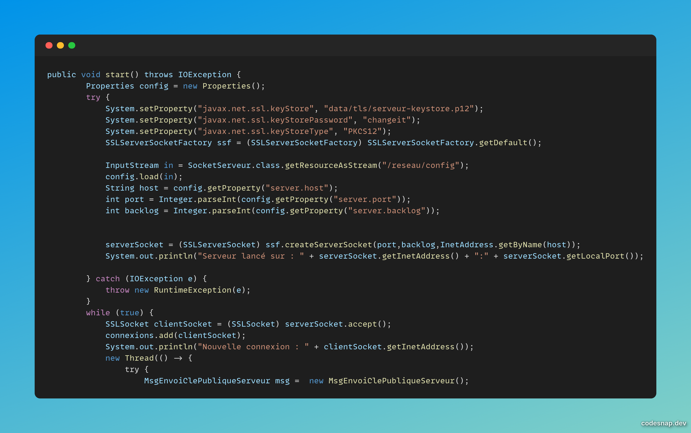
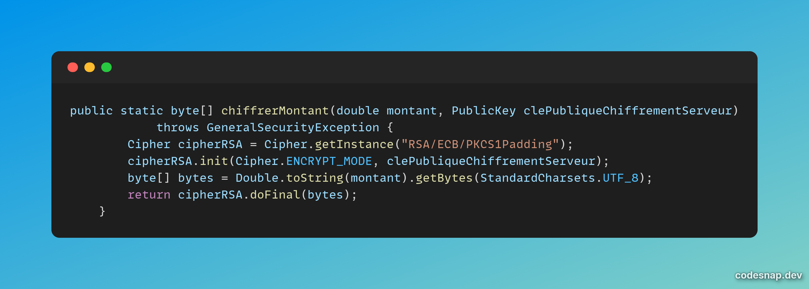
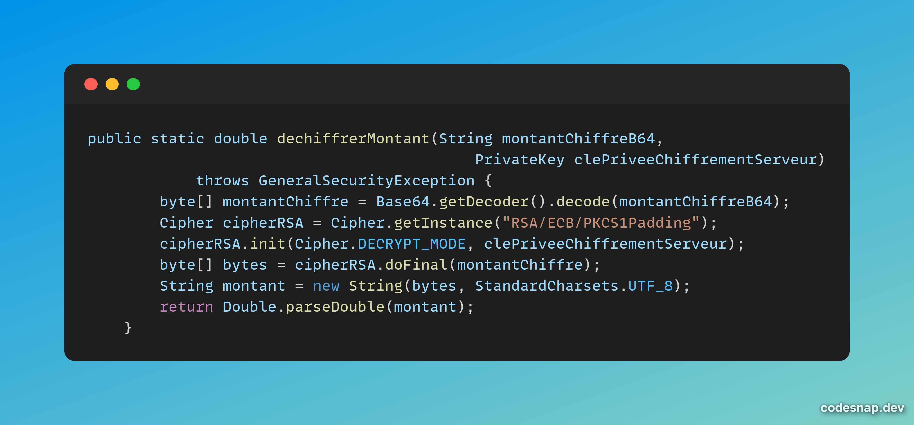
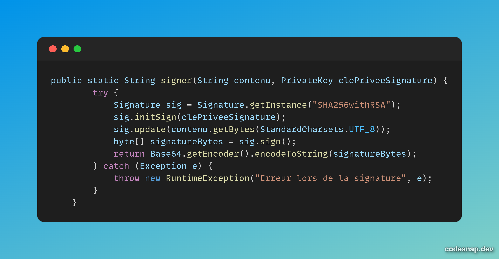
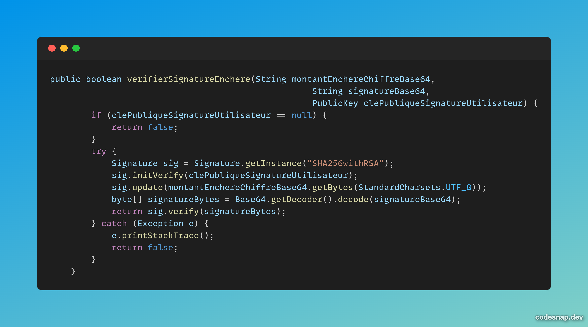
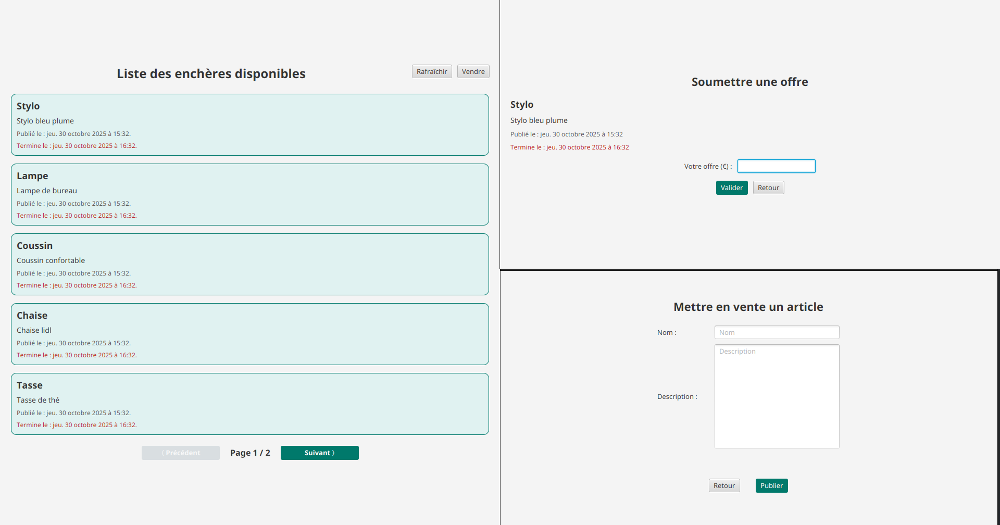

4-5 décembre 2025
Développeur back-end sécurisation
5 développeurs
Méthode Agile-Scrum
Java, Sockets, RSA, FXML
Partir des exigences et aller jusqu'à une application complète
Appréhender et construire des algorithmes
Déployer des services dans une architecture réseau
Appliquer une démarche de suivi de projet en fonction des besoins métiers des clients et des utilisateurs
Situer son rôle et ses missions au sein d'une équipe informatique
La spécialisation DACS (Déploiement d'Applications Communicantes et Sécurisées) propose une SAE (Situation d'Apprentissage et d'Evaluation) sur deux semestres. Lors du premier semestre, nous avons dû développer une application d'enchères de Vickrey en réseau sécurisée avec Java.
Lors de ce projet, j'ai eu la responsabilité de développer la partie sécurisation des échanges entre le client et le serveur. Je me suis porté volontaire pour prendre cette responsabilité car cette tâche était technique et très liée avec ma spécialisation DACS, ce qui la rendait plus intéressante pour moi.
Pour réaliser cette tâche, j'ai d'abord utilisé la librairie Java SSLSocket :

Puis j'ai implémenté un système de chiffrement RSA pour sécuriser l'envoi des montant d'enchères entre du client vers le serveur.

Fonction de chiffrement

Fonction de déchiffrement
Ainsi qu'un système de singature numérique pour garantir l'authenticité des messages échangés.

Fonction de signature numérique

Fonction de vérification de signature
Etant assez à l'aise avec les différents concepts utilisés durant le développement de ce projet, j'ai aussi eu un rôle important d'aide envers mes coéquipiers, concernant tous les aspects techniques du projet. La gestion de la base de données, la mise en place des différents composants FXML, et surtout la gestion de Git, où je me suis occupé de tous les merges et résolutions de conflits aux moments critiques du projet.
Côté technique, ce projet m'a beaucoup appris sur les échanges réseau et leur sécurisation. J'ai aussi pu utiliser activement mes connaissances en Java et SQL afin de réaliser
un code de qualité respectant les principes SOLID.
Côté humain, ce projet m'a permis de me familiariser avec le travail en équipe en mode Agile-Scrum, mais aussi et surtout de réaliser mes compétences en gestion de projet,
n'étant pas Product Owner à la base, j'ai tout de même su prendre des initiatives pour me placer en aide précieuse pour toute mon équipe.
Nous avons réalisé une application d'enchères, toujours en développement, actuellement sécurisée et fonctionnelle.
Ce projet est directement connecté à la compétence 1, car il m’a amené à partir d’exigences spécifiques (enchères de Vickrey sécurisées en réseau) pour réaliser une application complète, en concevant et élaborant à la fois la logique métier et les méthodes de protection des communications entre le client et le serveur. Il mobilise aussi la compétence 2, car l’implémentation du chiffrement RSA et des signatures numériques m’a conduit à comprendre et élaborer des algorithmes de sécurité appropriés, en organisant correctement les échanges et les opérations cryptographiques. La compétence 3 est directement engagée par l'emploi de sockets, de SSLSocket et par l'implémentation de services de communication sécurisés dans une architecture client-serveur. En outre, le suivi du projet sur deux semestres en méthode Agile-Scrum, avec une initiative dans la gestion de Git, des merges et des phases critiques, démontre la compétence 5, qui implique d'appliquer une démarche de suivi de projet en prenant en considération les attentes des utilisateurs et les contraintes d'exécution. Enfin, la compétence 6 se manifeste dans mon rôle de développeur back-end axé sur la sécurisation, clairement défini dans une équipe de cinq personnes, mais également par le soutien technique apporté à mes collègues et ma capacité à assumer des responsabilités transversales pour progresser collectivement
